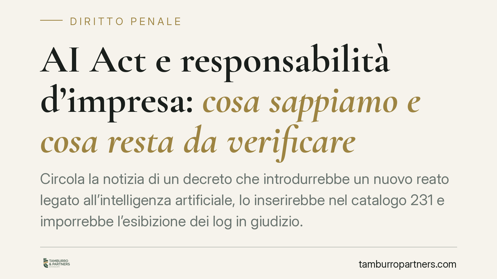

AI Act e responsabilità d'impresa: cosa sappiamo e cosa resta da verificare
Circola la notizia di un decreto che introdurrebbe un nuovo reato legato all'intelligenza artificiale, lo inserirebbe nel catalogo 231 e imporrebbe l'esibizione dei log in giudizio. Prima di trarne conseguenze operative occorre distinguere ciò che è diritto vigente da ciò che, allo stato, non risulta verificabile. Facciamo ordine, perché sul punto l'informazione imprecisa è essa stessa un rischio.

Il fatto
In questi giorni sono rimbalzate notizie su un presunto decreto legislativo che introdurrebbe un nuovo reato in materia di intelligenza artificiale (indicato come "art. 437-bis c.p."), lo aggiungerebbe ai reati-presupposto della responsabilità degli enti (un ipotetico "art. 25-vicies" del D.lgs. 231/2001) e detterebbe regole su risarcimento del danno ed esibizione dei log dei sistemi di AI in giudizio.
Una precisazione doverosa, prima di qualunque consiglio operativo: allo stato delle fonti ufficiali consultabili, questi riferimenti non risultano verificabili. Non abbiamo riscontro degli estremi di pubblicazione in Gazzetta Ufficiale di un "D.lgs. 160/2026", né dell'esistenza di un art. 437-bis c.p. (esiste l'art. 437 c.p., in tema di omissione dolosa di cautele contro infortuni sul lavoro, ma è altra cosa), né di un art. 25-vicies nel catalogo 231.
Su un tema che tocca il diritto penale e la responsabilità d'impresa, pubblicare come "vigente" una norma non confermata sarebbe scorretto. Trattiamo quindi la vicenda come scenario di riforma da monitorare, tenendo separato ciò che è certo da ciò che non lo è.
Inquadramento normativo
Il quadro europeo di riferimento è il Regolamento UE 2024/1689 (AI Act), già pubblicato e in applicazione progressiva. Tra le disposizioni rilevanti figurano gli obblighi di trasparenza per determinati sistemi di AI: l'art. 50 del Regolamento, nella versione consolidata, impone ad esempio di rendere riconoscibili i contenuti generati artificialmente e di informare gli utenti quando interagiscono con un sistema di AI. Si tratta di un riferimento da verificare sempre nella numerazione aggiornata del testo consolidato, perché le versioni linguistiche e le rettifiche possono incidere sulla rubrica degli articoli.
L'AI Act prevede una applicazione scaglionata nel tempo: alcuni obblighi (ad esempio quelli sui sistemi vietati) decorrono prima, quelli sui sistemi ad alto rischio dopo. Eventuali rinvii o adeguamenti europei sulle categorie ad alto rischio non cancellano gli obblighi già applicabili secondo il calendario del Regolamento: è questa la distinzione da tenere ferma.
Sul piano interno, un recepimento con profili penali e in materia di responsabilità 231 è plausibile e atteso, ma finché non ne conosciamo numero, data, pubblicazione in G.U. e date di decorrenza dei singoli obblighi, qualsiasi affermazione di operatività sarebbe prematura.
Implicazioni pratiche
Per imprese, fornitori di AI (anche extra-UE che operano sul mercato europeo) e utilizzatori professionali, il messaggio è duplice.
Da un lato, gli obblighi già discendenti dall'AI Act — in particolare trasparenza, documentazione tecnica e tracciabilità dei sistemi — sono un dato attuale su cui conviene essere allineati a prescindere dalle notizie sul decreto nazionale.
Dall'altro, l'ipotesi di un nuovo reato-presupposto e di obblighi di esibizione dei log in giudizio, se confermata, sposterebbe il baricentro: la conservazione e l'integrità dei registri di funzionamento (log) dei sistemi di AI diventerebbe non solo un tema di compliance, ma un elemento potenzialmente decisivo in sede processuale, sia civile sia penale. Chi non è in grado di ricostruire come il proprio sistema ha operato si espone a svantaggi probatori.
Cosa fare in concreto
- Verificare le fonti prima di decidere. Non adottare contromisure basate su norme non ancora confermate: attendere gli estremi ufficiali (numero, data, G.U., decorrenze) di qualunque decreto di recepimento.
- Allinearsi fin da ora all'AI Act. Mappare i sistemi di AI utilizzati o forniti, verificarne la classificazione e dare attuazione agli obblighi di trasparenza già applicabili.
- Impostare una policy di conservazione dei log dei sistemi di AI: definire cosa registrare, per quanto tempo e con quali garanzie di integrità e immodificabilità, in vista di possibili richieste di esibizione.
- Rivedere il Modello 231, predisponendo l'analisi di impatto per un eventuale nuovo reato-presupposto in materia di AI, così da poter aggiornare rapidamente la parte speciale quando il quadro sarà certo.
- Presidiare gli aggiornamenti normativi europei e nazionali, con un referente interno incaricato di segnalare l'entrata in vigore effettiva dei singoli obblighi.
È opportuno affrontare questi passaggi in modo coordinato tra funzione legale, IT e compliance, evitando interventi frammentari.
Disclaimer
Contributo informativo a cura di Tamburro & Partners - Avv. Giuseppe Tamburro. Non costituisce parere legale.
Ogni condominio ha una storia a sé.
Se gestisci un'amministrazione e vuoi un confronto su una specifica questione condominiale, scrivi allo studio. Ti rispondiamo entro un giorno lavorativo.